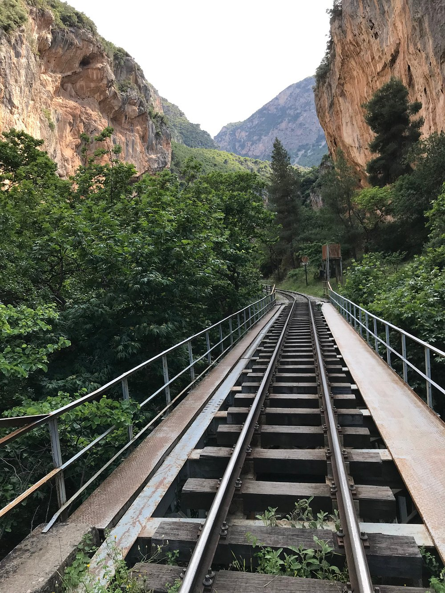
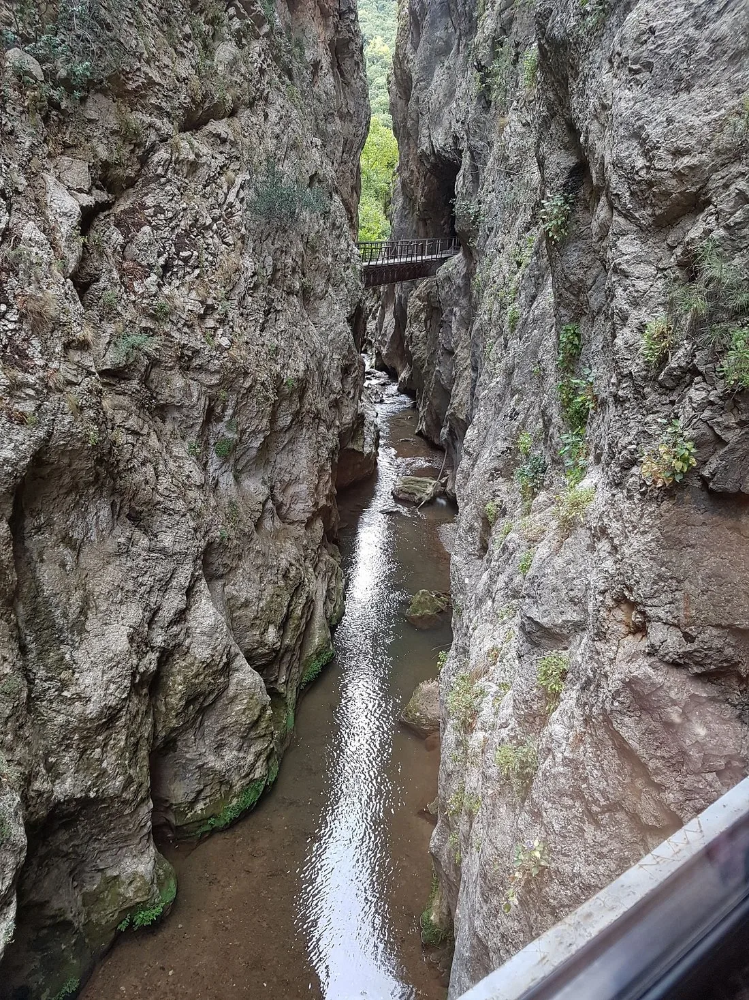
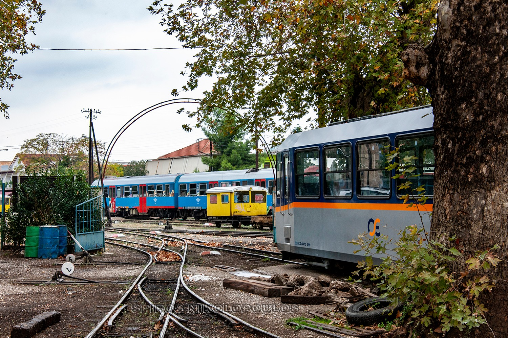
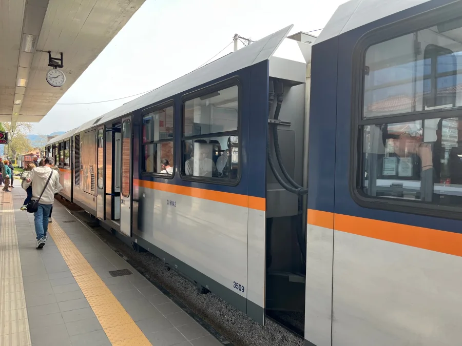
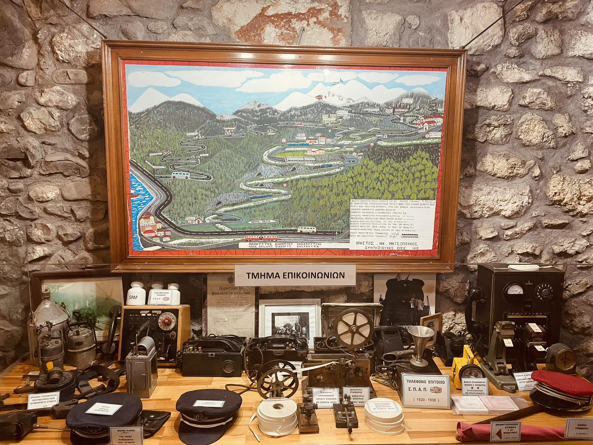

1896
Ξεκινά η κατασκευή της γραμμής, ένα τεχνικό έργο-σταθμός μέσα στο φαράγγι.
Ζήστε μία από τις πιο εντυπωσιακές σιδηροδρομικές διαδρομές της Ευρώπης μέσα από το Φαράγγι του Βουραϊκού UNESCO Global Geopark.
Μια σύντομη οπτική εισαγωγή στο τοπίο του Βουραϊκού, πριν η διαδρομή αποκαλύψει βαθύτερα τον χαρακτήρα του φαραγγιού.



Η επιβίβαση στον Οδοντωτό ανοίγει μια σιδηροδρομική διαδρομή όπου το φυσικό τοπίο και η ιστορική κληρονομιά συνυπάρχουν αδιάσπαστα. Σε περίπου μία ώρα, ο συρμός ανεβαίνει από το Διακοπτό στα Καλάβρυτα, ακολουθώντας την κοίτη του Βουραϊκού και περνώντας δίπλα από σήραγγες, καταρράκτες και το πέρασμα με τους σταλαγμίτες ανάμεσα στα Νιάματα και την Τρικλιά.
«Η στενή γραμμή των 750 χιλιοστών επιτρέπει στα ευέλικτα βαγόνια να διεισδύουν στο άγριο ανάγλυφο του φαραγγιού, περνώντας με ασφάλεια πάνω από 49 γέφυρες.»
Καλώς ορίσατε σε μια από τις πιο όμορφες και ιστορικές γωνιές της Ελλάδας. Ετοιμαστείτε για μια μέρα γεμάτη φύση, ιστορία και μοναδικές εικόνες, με αφετηρία το παραθαλάσσιο Διακοπτό και προορισμό τα Καλάβρυτα.
Σας προτείνω να πάρετε το πρώτο πρωινό τρένο, γύρω στις 09:05, ώστε να έχετε όλη τη μέρα μπροστά σας. Φροντίστε να έχετε κλείσει τα εισιτήριά σας ηλεκτρονικά αρκετές ημέρες πριν, καθώς η ζήτηση είναι μεγάλη. Η διαδρομή μέχρι την πρώτη μας στάση διαρκεί περίπου 45 λεπτά και είναι συγκλονιστική. Θα περάσετε μέσα από σήραγγες λαξευμένες στον βράχο, πάνω από γέφυρες που κρέμονται πάνω από το ποτάμι και δίπλα από καταρράκτες.
Γύρω στις 09:50 θα αποβιβαστείτε στον σταθμό της Κάτω Ζαχλωρούς, έναν οικισμό που μοιάζει να έχει βγει από παραμύθι, χωμένο μέσα στα πλατάνια. Από εκεί, έχετε δύο επιλογές: να απολαύσετε έναν καφέ δίπλα στις γραμμές ή να επισκεφθείτε τη Μονή του Μεγάλου Σπηλαίου. Μπορείτε να πάρετε ένα ταξί από το χωριό ή, αν είστε σε καλή φυσική κατάσταση, να περπατήσετε το ανηφορικό μονοπάτι για περίπου 45 λεπτά.
Περίπου στις 12:50 θα πάρετε το επόμενο τρένο για να συνεχίσετε το ταξίδι σας προς τα Καλάβρυτα. Η διαδρομή αυτή είναι πιο ομαλή και σας επιτρέπει να χαλαρώσετε καθώς πλησιάζετε στο οροπέδιο. Θα φτάσετε στην πόλη λίγο μετά τις 13:15, όταν ο καθαρός βουνίσιος αέρας και η παραδοσιακή αρχιτεκτονική θα σας υποδεχθούν στον ιστορικό αυτό τόπο.
Η ώρα επιβάλλει μια στάση για φαγητό στον κεντρικό πεζόδρομο. Τα Καλάβρυτα φημίζονται για τα κρέατά τους, τις πίτες και τα τοπικά τυροκομικά προϊόντα, όπως η φέτα Καλαβρύτων. Αναζητήστε μια ταβέρνα που σερβίρει παραδοσιακό μαγειρευτό κρέας ή δοκιμάστε την τοπική φορμαέλα, συνοδεύοντας το γεύμα με λίγο κρασί από τους αμπελώνες της Αχαΐας.

Παγκόσμιο Γεωπάρκο UNESCO Χελμού - Βουραϊκού
Πριν συνδεθεί με τη σιδηροδρομική εμπειρία, αυτό το πέρασμα υπήρξε τόπος του νερού, του βράχου και της μνήμης.
Πριν γίνει όνομα σε χάρτες και δρομολόγια, ο Βουραϊκός ανήκε πρώτα στη σφαίρα του μύθου. Η παράδοση λέει πως πήρε το όνομά του από τη Βούρα, κόρη της Ελίκης και του Ίωνα, και πως ο Ηρακλής άνοιξε το φαράγγι σχίζοντας το βουνό για να τη συναντήσει. Στις όχθες του ποταμού λειτουργούσε και μαντείο αφιερωμένο στον ήρωα, όπου οι προσκυνητές ερμήνευαν τους χρησμούς μέσα από αστραγάλους και τους Πίνακες της Γνώσης.
Η αρχαία Βούρα συνδέεται άμεσα με τον μύθο της Βούρας και του Ηρακλή. Η παράδοση θέλει τον ήρωα να ανοίγει το φαράγγι για να φτάσει στη θάλασσα και να τη συναντήσει.
Το ποτάμι πήρε το όνομά του από την αρχαία πόλη Βούρα. Οι περιηγητές που κατέβαιναν προς τη θάλασσα συναντούσαν τον Βουραϊκό και έκαναν στάση στο ιερό σπήλαιο του Ηρακλή.
Τα νερά του Βουραϊκού πηγάζουν από τις δυτικές παρυφές του βουνού Χελμός (Αροάνια όρη) και τις ανατολικές πλαγιές του όρους Καλλιφώνι. Ο ποταμός διανύει μια συνολική πορεία 37,5 έως 40 χιλιομέτρων, προτού εκβάλει στον Κορινθιακό κόλπο, κοντά στον οικισμό του Διακοπτού.
Το πιο εντυπωσιακό τμήμα της διαδρομής του είναι το Φαράγγι του Βουραϊκού, το οποίο εκτείνεται σε μήκος περίπου 20 χιλιομέτρων. Κατά τη διάρκεια χιλιετιών, η ορμή του νερού σμίλεψε το άγριο ανάγλυφο, δημιουργώντας ένα τοπίο με απόκρημνα βράχια, φυσικές σπηλιές και καταρράκτες. Από το 2009, το φαράγγι, μαζί με τον ευρύτερο ορεινό όγκο του Χελμού, προστατεύεται θεσμικά και αποτελεί το Εθνικό Πάρκο Χελμού-Βουραϊκού.
Το οικοσύστημα που αναπτύσσεται μέσα και γύρω από το φαράγγι παρουσιάζει τεράστιο επιστημονικό ενδιαφέρον. Η χλωρίδα της περιοχής θεωρείται εξέχουσας σημασίας, καθώς φιλοξενεί σπάνια και προστατευόμενα ενδημικά είδη φυτών που φυτρώνουν στους βράχους. Οι επιστήμονες έχουν καταγράψει φυτά όπως η καμπανούλα των βράχων (Campanula rupestris), ο άγριος στάχυς (Stachys parolinii) και η αουρίνια του Μωριά (Aurinia moreana).
Παράλληλα, η άγρια πανίδα της περιοχής βρίσκει ασφαλές καταφύγιο στην πυκνή βλάστηση και στους απότομους, δασωμένους ορεινούς όγκους που υψώνονται περιμετρικά του ποταμού, διατηρώντας την περιβαλλοντική ισορροπία του Εθνικού Πάρκου.
Η προστατευόμενη περιοχή του Εθνικού Πάρκου Χελμού-Βουραϊκού προσφέρει ένα ευρύ φάσμα δραστηριοτήτων, συνδέοντας το ορεινό ανάγλυφο με τα υδάτινα στοιχεία της Αχαΐας.
Το ευρωπαϊκό μονοπάτι Ε4 ακολουθεί για μεγάλα τμήματα τις ράγες του Οδοντωτού και αποκαλύπτει τη γεωλογία του φαραγγιού. Κάθε Μάιο, το «Πανελλήνιο Πέρασμα» φέρνει εκατοντάδες πεζοπόρους στην περιοχή, ενώ ο Χελμός προσφέρεται και για ορειβασία, αναρρίχηση, river trekking και ποδηλασία.
Όσοι προτιμούν την παρατήρηση του τοπίου μέσα από την άνεση του συρμού, επιβιβάζονται στον Οδοντωτό σιδηρόδρομο. Η διαδρομή των 22 χιλιομέτρων ενώνει το Διακοπτό με τα Καλάβρυτα. Το τρένο περνά πάνω από 49 γέφυρες και διασχίζει βράχους με σταλαγμίτες μεταξύ των σταθμών Νιάματα και Τρικλιά, προσφέροντας άμεση οπτική επαφή με τα ορμητικά νερά του ποταμού.
Κατά τη διάρκεια του χειμώνα, η δράση μεταφέρεται στις πλαγιές του όρους Χελμός. Το χιονοδρομικό κέντρο των Καλαβρύτων συγκεντρώνει τους λάτρεις των χειμερινών σπορ, διαθέτοντας 12 πίστες για σκι και διοργανώνοντας συχνά πάρτι στο χιόνι. Στο πλαίσιο της τουριστικής ανάπτυξης, δρομολογείται η επέκταση της σιδηροδρομικής γραμμής κατά 4,5 χιλιόμετρα, ώστε να συνδέσει τον σταθμό Καλαβρύτων με το χιονοδρομικό κέντρο και τη Μονή Αγίας Λαύρας.
Η περιοχή διαθέτει σημαντικό ενδιαφέρον για εξερεύνηση σπηλαίων. Στις όχθες του Βουραϊκού εντοπίζεται το σπήλαιο όπου, σύμφωνα με τον μύθο, λειτουργούσε μαντείο αφιερωμένο στον Ηρακλή, στο οποίο οι προσκυνητές διάβαζαν τους χρησμούς στους Πίνακες της Γνώσης. Επιπλέον, το Σπήλαιο Λιμνών προσφέρει οργανωμένη ξενάγηση 40 λεπτών, αποκαλύπτοντας 13 διαδοχικές λίμνες, εντυπωσιακούς σχηματισμούς σταλακτίτων και τον ξεχωριστό θάλαμο των νυχτερίδων.

«Ο Οδοντωτός δεν επιβάλλεται στο φαράγγι· εντάσσεται στον ρυθμό και στη μορφολογία του.»
Ξεκινά η κατασκευή της γραμμής, ένα τεχνικό έργο-σταθμός μέσα στο φαράγγι.
Πραγματοποιούνται τα πρώτα δρομολόγια ανάμεσα σε Διακοπτό και Καλάβρυτα.
Ο Οδοντωτός παραμένει μία από τις πιο εντυπωσιακές ορεινές σιδηροδρομικές εμπειρίες της Ευρώπης.
Η ιστορία της γραμμής αρχίζει στα τέλη του 19ου αιώνα, όταν ο Χαρίλαος Τρικούπης οραματίστηκε μια σιδηροδρομική σύνδεση ικανή να διασχίσει το φαράγγι και να συνδέσει τον παράκτιο με τον ορεινό χώρο. Το 1889 ανέθεσε τη μελέτη σε Γάλλους επιστήμονες, η γραμμή ολοκληρώθηκε επτά χρόνια αργότερα και εγκαινιάστηκε στις 10 Μαρτίου 1896. Το αρχικό σχέδιο προέβλεπε επέκταση έως την Τρίπολη, όμως το κόστος και οι καθυστερήσεις το σταμάτησαν οριστικά.
Μέσα στον 20ό αιώνα οι ατμομηχανές έδωσαν τη θέση τους στους συρμούς Billard και Decauville, ενώ ο εξηλεκτρισμός δεν προχώρησε ποτέ. Αντί γι' αυτό, χρησιμοποιήθηκε για χρόνια η άμαξα-γεννήτρια ΟΠΕ. Το 2009 ο στόλος ανανεώθηκε με τέσσερις νέους συρμούς Stadler Rail και σήμερα εξετάζεται επέκταση της γραμμής προς την Αγία Λαύρα και το Χιονοδρομικό Κέντρο Χελμού.
Μέσα σε αυτό το ορεινό ανάγλυφο, η γραμμή του Οδοντωτού διαμόρφωσε σταδιακά τη δική της ιστορική παρουσία.
Η διαδρομή των 22 χιλιομέτρων διασχίζει το Εθνικό Πάρκο Χελμού-Βουραϊκού από τη θάλασσα ως το βουνό. Ακολουθήστε βήμα βήμα την πορεία του συρμού ανάμεσα σε σταθμούς, γέφυρες, σπηλιές και απότομα βράχια, ως μια χαρτογράφηση του ίδιου του τοπίου:
«Κάθε στάση μεταβάλλει την εικόνα του τόπου, χωρίς να διακόπτει τη συνέχεια του ταξιδιού.»
Άνοιξε έναν ξεχωριστό χάρτη για το Διακοπτό και τον σιδηροδρομικό σταθμό, με περιβάλλον πλοήγησης και δεδομένα τοποθεσίας από τη Google.
Ο παρακάτω χάρτης παρέχεται από το Google Maps. Η σήμανση, τα δεδομένα και το branding ανήκουν στη Google.
Αφού ακολουθήσεις τη διαδρομή στο χάρτη, όλα επιστρέφουν στο ίδιο σημείο: τον σταθμό του Διακοπτού.
Στο σημείο όπου η θάλασσα συναντά το βουνό, το Διακοπτό ανοίγει το ταξίδι του Οδοντωτού.
Το Διακοπτό είναι η αφετηρία της διαδρομής αλλά και η λειτουργική βάση του Οδοντωτού. Εδώ βρίσκονται οι εγκαταστάσεις συντήρησης, το μουσείο της γραμμής και στον προαύλιο χώρο η ιστορική ατμομηχανή ΔΚ8003 του 1891.
Στο μουσείο του Οδοντωτού, με ελεύθερη είσοδο, ο επισκέπτης βλέπει από κοντά την αυθεντική παλιά ατμομηχανή και βασικά τεκμήρια της ιστορίας της γραμμής.
Η ΔΚ8003, κατασκευής Cail το 1891, εκτίθεται στο Διακοπτό ως το πιο αναγνωρίσιμο έκθεμα του μουσείου. Υπηρέτησε τη δύσκολη ορεινή διαδρομή για δεκαετίες, μέχρι την ολοκλήρωση της λειτουργίας της το 1965.

Αφετηρία
ΜουσείοΜέσα από φωτογραφίες επισκεπτών, εθελοντών και φίλων του τόπου, ανακαλύπτουμε ξανά τον Οδοντωτό και την ομορφιά της διαδρομής, ακόμη κι όταν δεν μπορούμε να είμαστε εκεί.
Όσα χρειάζεσαι για πρόσβαση, διάρκεια και σωστό προγραμματισμό πριν επιβιβαστείς.
Το Διακοπτό απέχει περίπου 160 χιλιόμετρα από την Αθήνα, δηλαδή κάτι λιγότερο από δύο ώρες οδήγησης.
Μπορείτε να φτάσετε εύκολα με αυτοκίνητο, ΚΤΕΛ ή συνδυασμό Προαστιακού και λεωφορείου.
Η πιο άμεση επιλογή είναι μέσω Ολυμπίας Οδού, σε μια άνετη διαδρομή χωρίς πολύπλοκες αλλαγές πορείας.
Το ΚΤΕΛ Αχαΐας εξυπηρετεί συχνά δρομολόγια προς την περιοχή για όσους ταξιδεύουν χωρίς αυτοκίνητο.
Εναλλακτικά, μπορείτε να φτάσετε με Προαστιακό έως το Κιάτο και από εκεί με ανταπόκριση προς τον σταθμό του Διακοπτού.
Περίπου 1 ώρα μέσα στο φαράγγι του Βουραϊκού.
Διακοπτό - Καλάβρυτα με ενδιάμεσες στάσεις.
Άνοιξη και Φθινόπωρο για ιδανικό καιρό και χρώματα.
Ανακάλυψε παραλίες, τοπικές γεύσεις και αυθεντικές στάσεις πριν ή μετά το ταξίδι με τον Οδοντωτό.
Ανακοίνωση
Ημερομηνία: Κυριακή 10 Μαΐου 2026.
Διαδρομή: κατάβαση στο φαράγγι του Βουραϊκού, από τα Καλάβρυτα προς το Διακοπτό.
Άνοιξε την ανακοίνωση για λεπτομέρειες συμμετοχής, οδηγίες και την ενημέρωση του διοργανωτή.
Κοινοποίηση σε